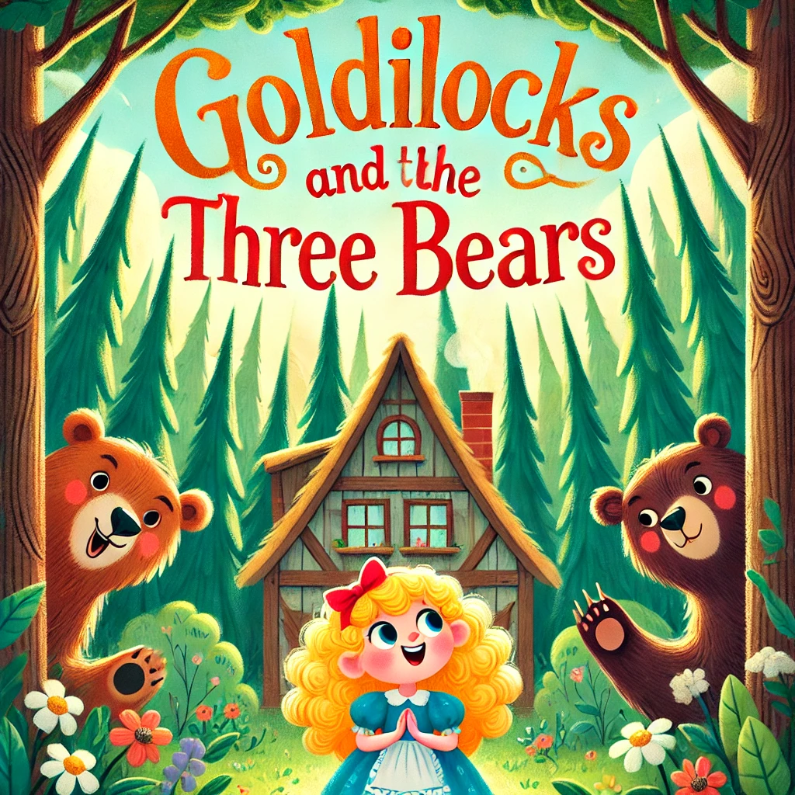
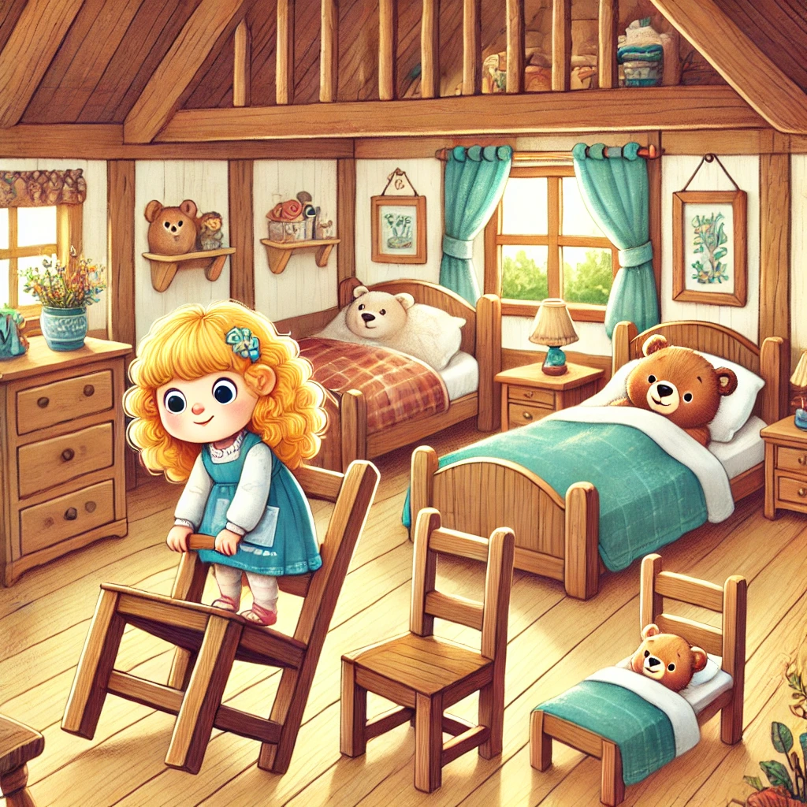

Goldilocks and the Three Bears
Once upon a time, curious little Goldilocks wandered into the woods and found a cozy cottage. Inside, she discovered three bowls of porridge. She tasted each one until she found the one that was just right. Feeling tired, she tried three chairs, breaking the smallest one, and then tested three beds, falling asleep in the coziest. But the cottage belonged to three bears—Papa Bear, Mama Bear, and Baby Bear—who soon returned home. They found their porridge tasted, chairs sat in, and Baby Bear’s bed occupied! Startled awake, Goldilocks fled, never to return to the bears' house again.
Goldilocks Enters the Cottage

Goldilocks, a curious little girl with golden curls, wanders through the forest and stumbles upon a quaint cottage. Feeling tired and hungry, she peeks inside and finds the door slightly open. The cozy room is filled with the smell of freshly made porridge. On the table, she sees three bowls: one big, one medium, and one small. Tempted by the delicious aroma, she decides to taste each bowl. The first is too hot, the second too cold, but the third is just right, and she eats it all up.
Goldilocks Tries the Chairs and Beds
After finishing the porridge, Goldilocks feels sleepy. She notices three chairs: a big one, a medium one, and a small one. She tries the big chair but finds it too hard, the medium chair is too soft, and the small chair is just right – but it breaks under her weight. Feeling even more tired, she heads to the bedroom and finds three beds. The first is too hard, the second too soft, but the third is just right. She snuggles in and falls asleep.
The Bears Return Home

The three bears – Papa Bear, Mama Bear, and Baby Bear – return home after their walk. They immediately notice something is wrong. Papa Bear grumbles, “Someone's been eating my porridge,” Mama Bear exclaims, “Someone's been eating my porridge,” and Baby Bear cries, “Someone’s eaten all my porridge!” They move to the living room and see their chairs have been used, with Baby Bear’s chair broken to pieces. Finally, they go to the bedroom, where Baby Bear finds Goldilocks sleeping in his bed. She wakes up to see the three bears staring at her in surprise. Frightened, she jumps up and runs out of the cottage, never to return